Blink sits at the top of your screen and shows what you keep looking for: the next deadline, the song that is playing, the files you are carrying, the quick controls. Point at it and it opens. Move away and it is gone.
Version 0.3.0 · Windows 11 (Windows 10 should work) · about 2 MB · MIT license
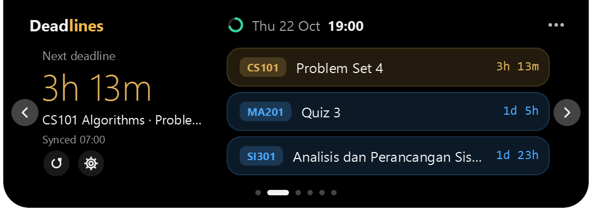
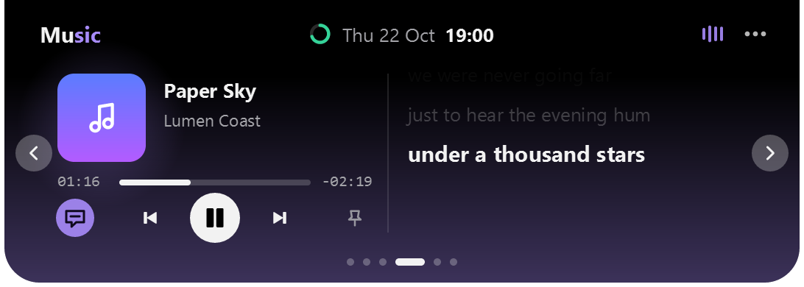
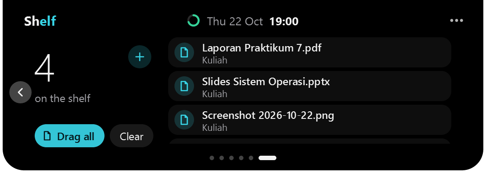
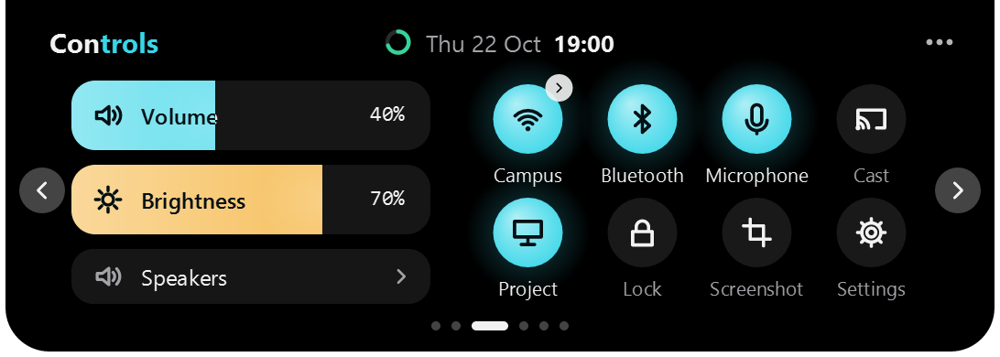
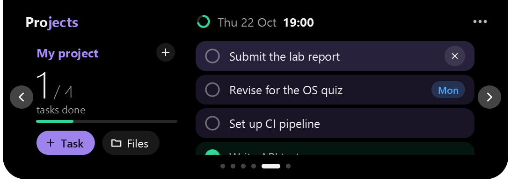
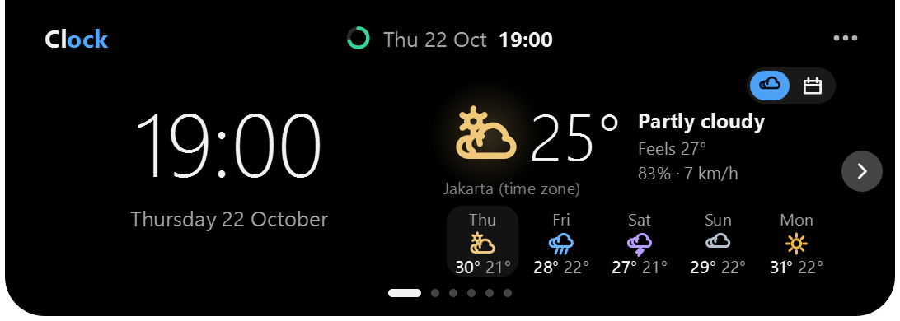
Everything a student keeps looking for
Not a dashboard you have to open. A notch you glance at.
Deadlines
The next one, always in sight.
Add a calendar link (Moodle or BRONE, a Google Calendar secret address, any .ics) and the nearest deadline sits in the notch with a countdown. Click a course to see only that one. Snooze a deadline's reminders, mark it done, or turn it into a project.
Peeks
Said once, then gone.
A charger, a low battery, a Bluetooth device, volume, a deadline that is close: the notch says it for a moment and goes back.
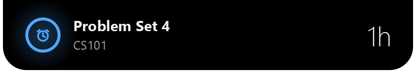
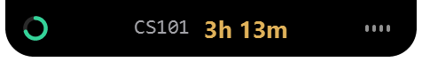
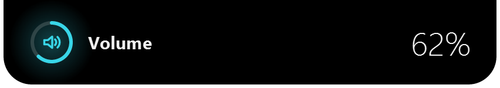
Music
The song, with its lyrics.
Whatever plays in Windows: Spotify, a browser tab, any player. The cover, the controls, synced lyrics, bars that move with the sound, and a colour taken from the cover.
Shelf
Carry files in the notch.
Drop files on the notch, then drag them out onto another app: a chat, a mail, a folder. It also takes what you copied: files, screenshots, text. Press CtrlAltV and the clipboard is on the shelf.
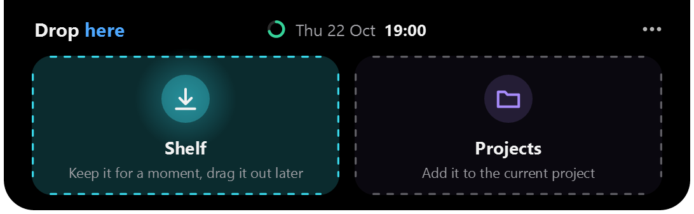
Controls
Volume, Wi-Fi, brightness.
A click away, and the wheel works on the closed notch. Using SteelSeries Sonar? Blink moves Sonar's master.
Projects
Tasks and files together.
One small list for a project: its tasks and its files. Make one from a deadline with a click.
Your style
Yours to shape.
Palettes, accents and pill shapes. Gestures you can switch off one by one. Keyboard shortcuts, and screen reader support.
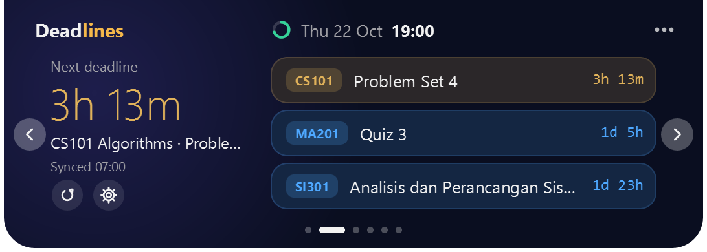
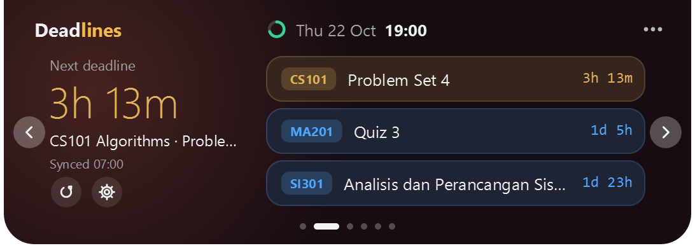
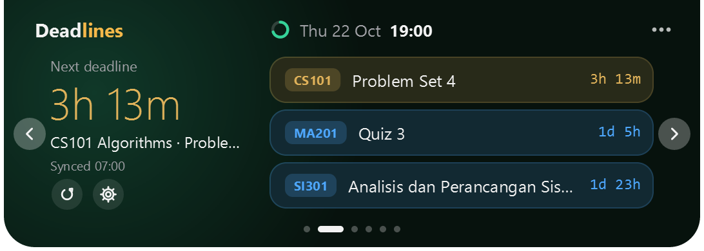
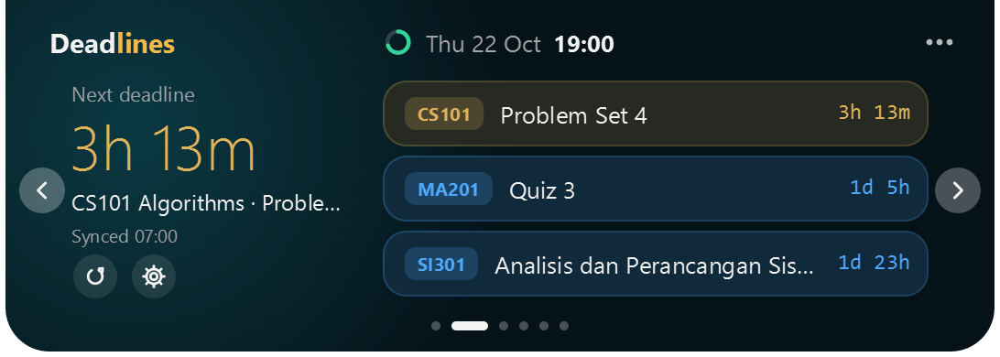
Light as a feather
No web engine in the part that is always running. It sleeps until something happens.
~10 MBof memory at rest
0%CPU when idle
~2 MBto download
0accounts, trackers or ads
Everything stays on your PC. Blink contacts the internet only for what you turn on: your calendar links, the weather for the city you chose, song lyrics when you ask for them, and an update check when you press the button. Your calendar links live in Windows Credential Manager. The full list.
Install in three steps
Download
Get Blink-setup.exe from the button above. It is about 2 MB and installs for you only, with no administrator rights.
Run it
The installer is not code-signed yet, so Windows may say "Windows protected your PC". Choose More info, then Run anyway. To check what you downloaded, compare the SHA-256 on the release page with Get-FileHash Blink-setup.exe in PowerShell.
Add your calendar
Open Blink's settings (the three dots in the notch) and paste your calendar link. A short tour shows the rest the first time.
Updates: Settings, General, Check for updates. Blink never checks by itself, and only installs a file whose SHA-256 matches.
Questions
Is it really free?
Yes. It is open source under the MIT license: use it, read it, change it.
Why does Windows warn me?
The installer is not code-signed yet (a certificate costs money, and a new program has no reputation). Check the SHA-256 on the release page, or build it yourself from the source.
Which calendars work?
Any link to an .ics file: Moodle and BRONE calendar export links, the secret iCal address of a Google Calendar, and others. You can also type events in yourself.
Does it work on Windows 10?
It is made and tested on Windows 11. Windows 10 version 1809 and later should work, but it has not been tested there. The settings window needs the Microsoft Edge WebView2 Runtime, which Windows 11 already has.
Where is my data, and how do I remove everything?
In %APPDATA%\dev.riski.deadlinenotch. Uninstall Blink and tick the box that deletes your settings, or delete that folder. Calendar links are in Windows Credential Manager and go with the uninstall.
I found a problem.
Please open an issue on GitHub. In Settings, General, "Copy diagnostics" makes a report with no personal data in it.